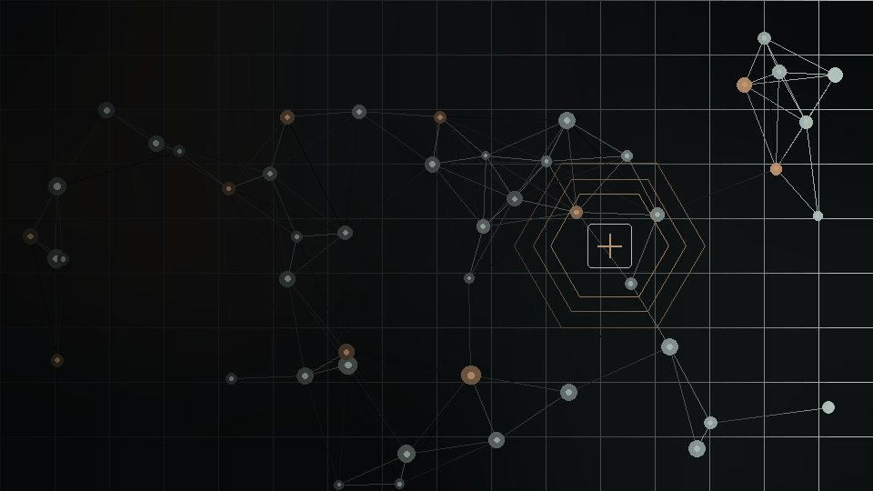
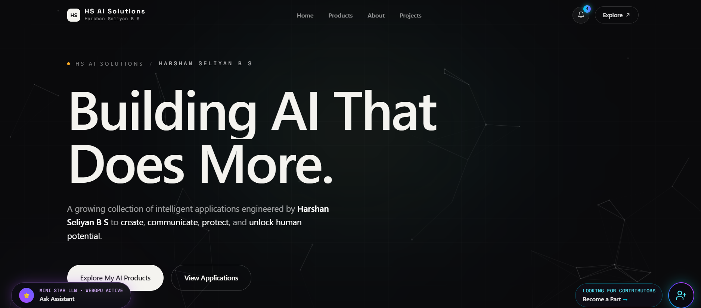
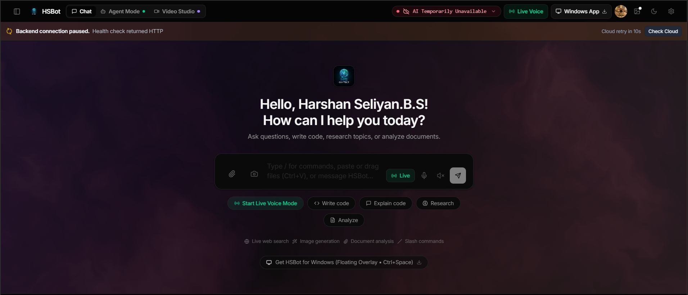

AI & Machine Learning
Exploring language models, multimodal workflows, model routing, and practical AI application design.

I'm Harshan Seliyan — an Information Technology student and founder of HS AI Solutions, exploring the space where artificial intelligence, software engineering, and real-world ideas meet.
A student mindset. A builder's instinct. A long-term interest in making complex technology useful.

I'm pursuing B.Tech in Information Technology at RMK Engineering College. My work is driven by a simple question: how can intelligent software become more useful, more accessible, and more connected to the way people actually work?
Through HS AI Solutions, I experiment with AI-powered applications, local language models, product interfaces, and tools that turn ideas into working prototypes. The process is iterative by design — research, build, test, improve, repeat. I'm especially interested in the practical details that sit behind a polished interface: model selection, latency, memory limits, data flow, accessibility, and the small design decisions that make software feel considered.

The interesting work happens when models, interfaces, data, and real-world constraints come together into something people can use.
A selection of experiments and product builds across AI, productivity, interfaces, and applied research. Open a project to explore it.

The public-facing product hub for HS AI Solutions: a place to present AI experiments, connect users with tools, and develop a more unified product identity.
OPEN PROJECT ↗
An evolving assistant project exploring conversational interaction, file-aware workflows, agent-style tasks, and multimodal AI capabilities as the implementation develops.
OPEN PROJECT ↗A web product experiment focused on presenting a clear, approachable digital experience.
↗ 04A productivity-oriented application experiment exploring structured information and practical workflows.
↗ 05An AI-focused project exploring how intelligent tools may support structured analysis and investigation workflows.
↗ 06A set of local-model experiments around language and vision, GGUF model workflows, model identity, and flexible inference under real hardware constraints.
↗ 07Additional project explorations and prototypes documented through my development work.
↗PROJECT DESCRIPTIONS SUMMARIZE THE CURRENT CONCEPTS; FEATURES AND AVAILABILITY MAY CHANGE AS BUILDS EVOLVE.
A learning map rather than a claim of mastery — these are the areas shaping my current direction.
Exploring language models, multimodal workflows, model routing, and practical AI application design.
Learning about local inference, model formats, hardware constraints, and efficient deployment approaches.
Building responsive product interfaces and connecting frontend experiences to backend services.
Experimenting with task-oriented assistants, automation concepts, and software that helps people get work done.
Interested in how AI can connect with electronics, IoT, sensors, and physical-world applications.
Using prototypes, debugging, documentation, and iteration to turn concepts into working experiments.
The principles behind my experiments: useful outcomes first, thoughtful engineering, and continuous iteration.
Before choosing a model, framework, or interface, define the job the product should do. A promising technology becomes meaningful when it solves a real need.
Models, APIs, data, frontend components, and infrastructure are not isolated features. I enjoy exploring how these layers can become one coherent experience.
Prototypes reveal what plans cannot. Testing, debugging, collecting feedback, and improving the next version are essential parts of the process.
“Make the complex feel clear. Make the useful feel effortless.”
A DIRECTION, NOT A FINISH LINE.An evolving path through education, experimentation, and independent product development.
Developing AI-powered product concepts and web applications while learning how to connect models, interfaces, and usable workflows.
Studying Information Technology at RMK Engineering College, building foundations in computing and expanding through personal projects.
Exploring local AI, multimodal systems, software automation, and the opportunities at the intersection of AI and hardware.

I'm interested in thoughtful collaborators, useful problems, and ambitious ideas that can be tested in the real world.
Let's connect around AI, software, product ideas, or learning through building. I'm always interested in conversations that lead to something useful.